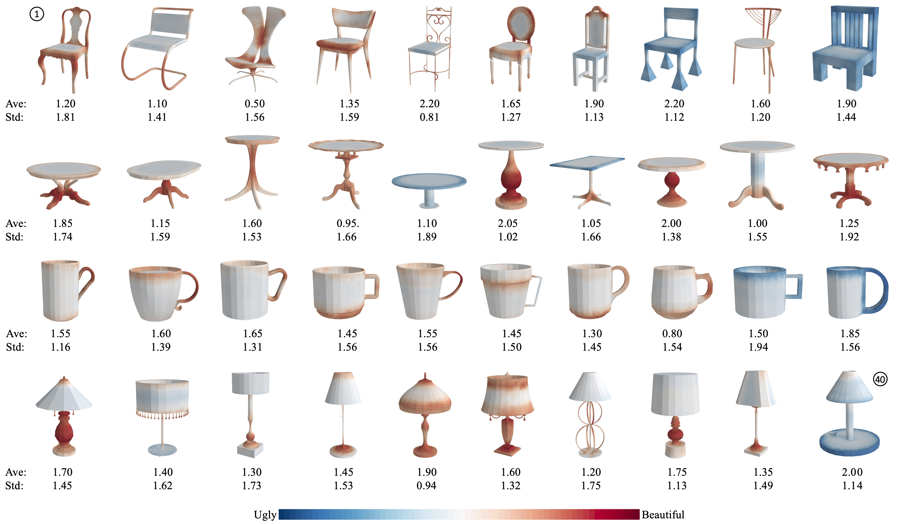

|
Learning 3D Shape Aesthetics Globally and Locally
|
|
Pacific Graphics 2022
|
|
Minchan Chen
Manfred Lau
City University of Hong Kong |
|  |
|
Paper [PDF] Slides [tbc] Citation [tbc] Chen, M. and Lau, M. "Learning 3D Shape Aesthetics Globally and Locally." In Computer Graphics Forum, vol. 41, no. 7, pp. xxx-xxx, 2022. |